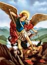
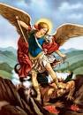

Reflexión del mes de Febrero 2021.
Palabra de Vida
Febrero 2021
“Sean misericordiosos, como el Padre de ustedes es misericordioso.”
(Lucas 6, 36)
“Al evangelista Lucas le gusta subrayar la grandeza del amor de Dios con una característica, que ciertamente parecería describirlo en su mayor expresión: la misericordia. Podría decirse que en las Sagradas Escrituras es el matiz maternal del amor de Dios: el que se ocupa del cuidado de sus criaturas, las anima, las consuela, las recibe sin cansarse nunca. A través del profeta Isaías, el Señor promete a su pueblo: “Como un hombre es consolado por su madre, así yo los consolaré a ustedes, y ustedes serán consolados en Jerusalén” . Se trata de un atributo reconocido y proclamado también por la tradición islámica: entre los 99 “nombres sublimes de Dios” (o “los más hermosos”), los que con mayor frecuencia se repiten en los labios del fiel musulmán están el Misericordioso y el Clemente. Esta página del Evangelio nos presenta a Jesús que, frente a una multitud de personas provenientes de ciudades y regiones incluso lejanas, hace a todos una propuesta audaz, desconcertante: imitar a Dios, el Padre, precisamente en el amor de misericordia. Una meta que puede parecernos casi imposible, inalcanzable.
“Sean misericordiosos, como el Padre de ustedes es misericordioso.”
En la perspectiva del Evangelio, para imitar al Padre tenemos antes que nada que ir cada día tras Jesús y aprender de Él a ser los primeros en amar, tal como Dios mismo hace incesantemente con nosotros. Es la experiencia espiritual que describe el teólogo luterano Dietrich Bonhoeffer (1906-1945): “Cada día la comunidad cristiana canta ‘He recibido misericordia’. Lo he tenido como don incluso cuando cerré mi corazón a Dios; cuando me extravié y no supe encontrar el camino de regreso. Fue entonces cuando la palabra del Señor llegó a mi encuentro. Y comprendí: Él me ama. Jesús me encontró, estaba cerca de mí, solo Él. Me ofreció consuelo, perdonó todos mis errores y no me culpó por el mal. Cuando era su enemigo y no respetaba sus mandamientos, me trató como amigo. Me cuesta entender por qué el Señor me ama de esta manera, por qué soy tan querido por él. No puedo comprender cómo Él quiso y pudo vencer mi corazón con su amor, solo puedo decir: ‘Recibí misericordia’” .
“Sean misericordiosos, como el Padre de ustedes es misericordioso.”
Esta palabra del Evangelio nos invita a una verdadera revolución en nuestras vidas: cada vez que nos encontramos ante una posible ofensa podemos evitar el sendero del rechazo, del juicio inapelable y de la venganza, y elegir el del perdón y la misericordia. No es cuestión de seguir un pesado deber, sino más bien de recibir de parte de Jesús la posibilidad de pasar de la muerte del egoísmo a la vida de la comunión. Así descubriremos con alegría haber recibido el mismo ADN del Padre, que no condena definitivamente a nadie, sino que ofrece a todos una segunda oportunidad y abre horizontes de esperanza. Esta toma de posición nos permitirá también preparar el terreno de las relaciones fraternas, de las cuales puede surgir y crecer una comunidad humana finalmente orientada a la convivencia pacífica y constructiva.
“Sean misericordiosos, como el Padre de ustedes es misericordioso.”
Meditando la frase de Mateo que proclama la bienaventuranza de quien practica la misericordia , sugería Chiara Lubich: “El tema de la misericordia y del perdón atraviesa todo el Evangelio. Y la misericordia es precisamente la expresión última del amor, de la caridad, la que la realiza y la torna perfecta. Tratemos, por lo tanto, de vivir en cada relación este amor por los demás bajo la forma de la misericordia. La misericordia es un amor que sabe recibir a cada prójimo, de manera especial al más pobre y necesitado. Un amor que no mide, que es abundante y universal, concreto. Un amor que trata de suscitar la reciprocidad, que es el fin último de la misericordia, sin la cual solo existiría la justicia, que sirve para crear la igualdad pero no la fraternidad. Si bien parece algo difícil y atrevido, preguntémonos ante cada prójimo cómo se comportaría su madre con él. Un pensamiento que nos ayudará a comprender y a vivir de acuerdo con el corazón de Dios”.3.
Letizia Magri
1 Cf. 1 Pedro 5, 7.
2 Cf. Mateo 18,20.
3 C. Lubich, Palabra de vida, julio 2006.
Letizia Magri.
1 Filipenses 2, 3.
2 Palabra de vida, octubre 1995.